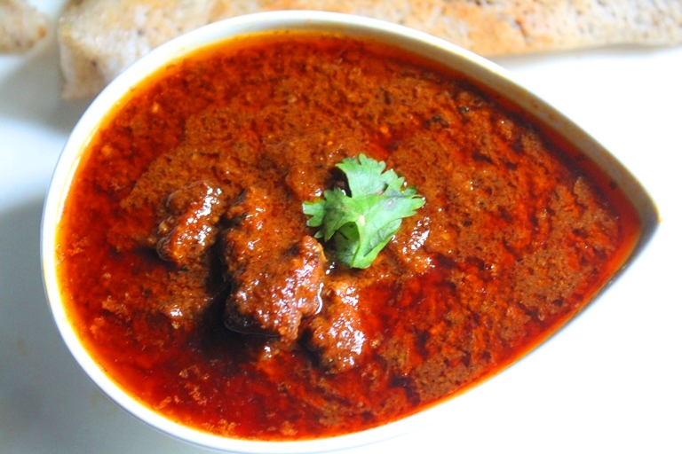
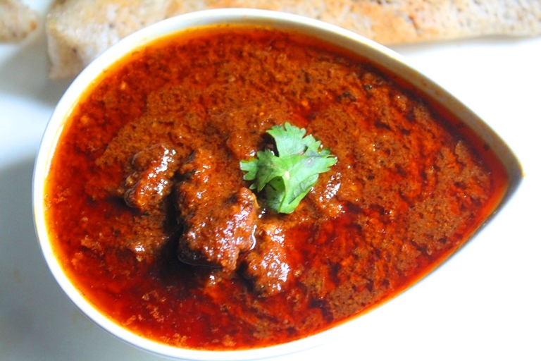

Ingredients:
1)2 cup warm water
2)2 tsp vinegar
3)1/2 tsp pepper powder
4)1 tsp coriander powder
5)1/2 tsp clove powder
6)3 tblsp oil
7)2 tblsp desiccated coconut
8)2 big size onions
9)1 1/2 inch ginger
10)1/4 cup yogurt
11)750 gms mutton
12)1 tsp red chilli powder
13)1 tsp cinnamon powder
14)6 cloves garlic
15)1 tsp turmeric powder
16)Salt to taste
How to make goan mutton curry :
1)Clean and wash the mutton thoroughly.
2)Remove off the excess water and cut into 1 inch cubes.
3)Cream the yogurt and turmeric powder together.
4)Mix in the mutton cubes and marinate for 3-4 hours.
5)Take off and cut one onion.
6)Slice the other.
7)Wash, take off and crush the ginger and garlic.
8)Heat up half the oil over medium heat up in a heavy bottomed pot and fry cut onion until brown.
9)Remove with a slotted spoon and keep aside.
10)Mix in the remaining oil to the pot and fry the cut onions until soft.
11)Mix in the crushed ginger and garlic.
12)Stir fry for one minute.
13)Mix in the coriander powder, cinnamon powder, clove powder, pepper powder, red chilli powder.
14)Stir fry for 1 minute over low heat.
15)Mix in 2 tblsp of water and stir fry until it evaporates.
16)Mix in the desiccated coconut stir fry for 2 minutes over low heat.
17)Mix in meat and increase the heat.
18)Stir and fry the meat for 5 minutes or until it changes colour.
19)Mix in water and bring it to a boil.
20)Cover and simmer (boil slowly at low temperature) for 30 minutes, mix in the fried onions and salt.
21)Further simmer (boil slowly at low temperature) for 30 minutes or until the meat is tender.
22)Stir in vinegar, take off from heat, serve hot.